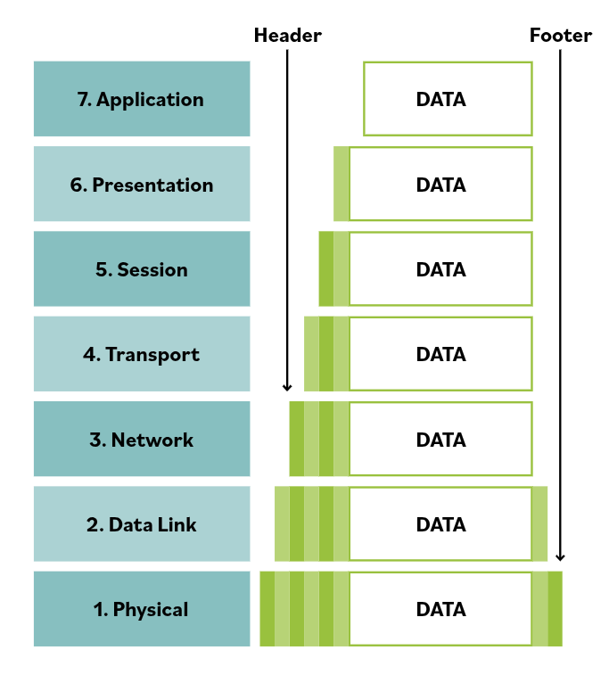

35. Open Systems Interconnection (OSI) Model
The OSI model is a conceptual framework used to describe how communication occurs between computer systems on a network. It standardizes how networking functions should operate so different hardware and software systems can communicate with each other.
The model does not represent actual hardware or software implementations. Instead, it provides a structured way to understand networking processes by dividing them into layers. Each layer performs specific functions and interacts only with the layers directly above and below it.
The OSI model divides network communication into seven layers, each responsible for a particular task involved in transmitting data between systems.
7. Application Layer
The application layer is the interface between user applications and the network. It provides network services to applications such as web browsers, email clients, and file transfer programs.
It determines whether communication partners are available and establishes communication with network services.
6. Presentation Layer
The presentation layer is responsible for formatting and translating data so that different systems can understand it.
It handles functions such as data encoding, compression, and encryption so that the receiving system can correctly interpret the data.
5. Session Layer
The session layer manages communication sessions between devices.
It establishes, maintains, and terminates sessions between two communicating systems. It also manages synchronization and controls the dialogue between systems.
4. Transport Layer
The transport layer provides reliable or unreliable delivery of data between hosts.
It breaks large data streams into smaller segments and ensures they are delivered correctly. It also manages flow control, error detection, and retransmission when needed.
Common transport protocols include TCP (reliable, connection-oriented) and UDP (connectionless and faster).
3. Network Layer
The network layer is responsible for logical addressing and routing.
It determines the best path for data to travel between networks and delivers packets to the correct destination using IP addresses.
Routers operate at this layer.
2. Data Link Layer
The data link layer handles communication between devices on the same network segment.
It packages packets into frames and uses MAC addresses to deliver them to the correct device on the local network.
It also detects and sometimes corrects transmission errors.
Switches and wireless access points operate at this layer.
1. Physical Layer
The physical layer is responsible for the actual transmission of raw binary data across the physical medium.
It converts digital data into electrical, optical, or radio signals and sends them through cables, fiber optics, or wireless transmission.
This layer includes physical components such as network cables, connectors, and signaling standards.
Encapsulation and De-Encapsulation
Encapsulation
When data is transmitted across a network, it moves down the OSI layers from application to physical.
At each layer, additional information called headers (and sometimes footers) is added to the data. These headers contain information needed for routing, addressing, error detection, and session management.
As data moves down the layers, it becomes:
- Data (upper layers)
- Segment (transport layer)
- Packet (network layer)
- Frame (data link layer)
- Bits (physical layer)
De-Encapsulation
When the receiving device gets the data, the process works in reverse.
Data moves up the OSI layers from physical to application.
Each layer reads and removes its header, interpreting the information needed for processing the data correctly.
By the time the data reaches the application layer, it is delivered in its original form for the application to use.

Key Idea
The OSI model organizes network communication into seven layers, allowing complex networking functions to be understood, designed, and implemented in a structured way. Each layer performs specific tasks and passes data to the next layer until communication is completed.